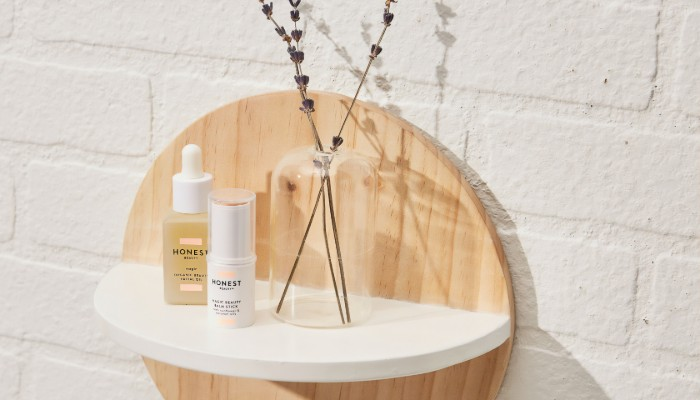

What's New
新着情報
かぼちゃのあったかスムージー
食事に温かいものが恋しくなる秋冬。
これからの季節にぴったりの
かぼちゃのスムージー。
皮膚や粘膜を保護するための、
ビタミンがたっぷりのかぼちゃは、
肌荒れを防ぎ、美肌を作るのに役立ちます。
Category
カテゴリー
Beauty(美容・健康)、LifeStyle(ライフスタイル)、Food(食事)
の3つのカテゴリーから
「きれいになるための小さなアイデア」
を発信しています。

Recommend
おすすめのコンテンツ
秋の古都を歩く
ため息がこぼれんばかりの美しい秋の京都。
そんな京都を着物を着て散策してみませんか？
紅葉狩りで混み合う京都の中でも
比較的人が少ない穴場スポットを紹介。
色づく木の葉をゆっくりと観賞することもできます。
フォトジェニックなスポットは着物で
さらに「映える」写真を撮影してみましょう。
Brand
ブランド
Graceでは
スキンケアやメイクを楽しむ女性から
普段何を思っているのか？
今の不満は何か?
理想のアイテムは何か？
などの声を集めて
ユーザーと一緒につくり上げた
新しいコスメブランドを展開しています。
